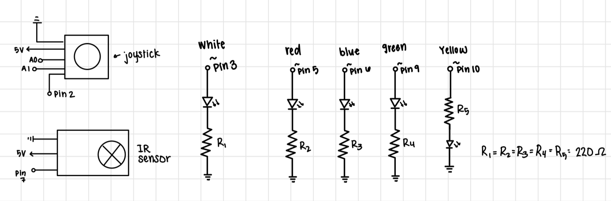
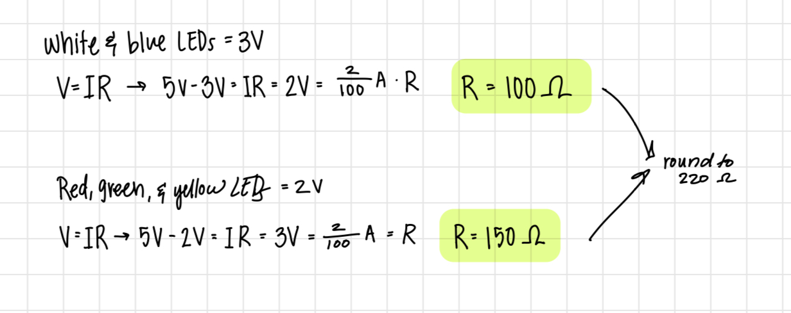
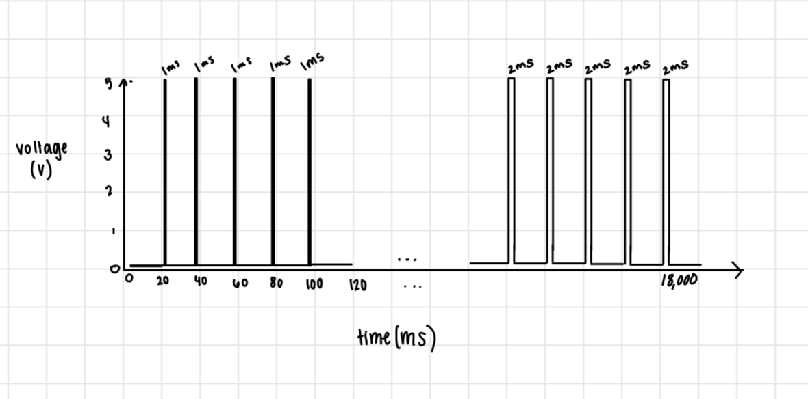

A4: Libraries

This is an image of my final circuit built on a breadboard and connected to the Arduino.
All LEDs are in parallel branches, and each have their own resistor,
The white LED is conneced to pin 3. The red, blue, green, and yellow LEDs are connected to
the digital PWM pins 5, 6, 9, 10. The x and y values of the joystick are connected to A0
and A1, and the IR sensor is connected to pin 7.
Circuit Diagram

Here is the schematic diagram for my circuit.
Each branch with an LED contains one LED and one resistor.
I used a parallel curcuit for the LEDs to ensure voltage was constant across each LED.
The IR Sensor resistor is also in its own branch.
Choosing Resistors

To choose the right resistors for each branch, I started by measuring the voltage drop through
each LED. The white and blue LEDs have a voltage drop of apprximately 3.0 volts. Red, green,
and yellow LEDs have a drop of approximately 2.0 volts. The arduino provided 5 volts of power
and I wanted a current of 20 mA. Then I used Ohm's Law (V = IR) to calculate the resistance
needed. The result was a 100 or 150 ohm resistor for each branch. To ensure that my the
current would be 20mA or lower, I rounded up, using a 220 ohm resistor for each LED.
Final Circuit GIF
Here is a video of the final circuit: Circuit Functionality
Due to the size of the video, I couldn't create a high quality GIF that
VS code would accept that also showed all of the functionality.
The white lights increase in brightness as the photocell
sensor value decreases, which happens when it gets darker.
If the sensor value goes below a certain threshold, the red LED will turn on. This is simulated
in the GIF throught the use of a brown cloth covering the photocell resistor to decrease the light reaching it.
Additional Questions
Say you are using a servo motor you attach to pin 9. In your loop() you have the following code:
void loop() {
for (pos = 0; pos <= 180; pos += 1) {
myservo.write(pos);
delay(100);
}
}
Draw a graph with the x-axis as time and the y-axis as voltage at pin 9 with respect to ground.

When using a servo motor, there is a pulse every 20 milliseconds, and the width of the
pulse determines the position of the servo. So, when the position (pos) is equal to 0, the
pulse with is 1 millisecond. Since the delay, is 100 milliseconds, we see 5 1ms pulses.
When the position is 180, the pulse width is 2 milliseconds, so we see 5 2ms pulses.
Due to the length of the delay and the number of positions in the for loop, I did not draw
every pulse state in my graph, however it is important to note that the pulse width
changes based on the position of the servo. So the postion values between 0 and 180 would
have propotional pulse widths between 1ms and 2 ms.
2: Your input device is slightly broken, leading it to give us an erroneous reading 1% of the
time. How can we address this? Answer in (pseudo)code.
If the sensor is experiencing this kind of error, we can use an if statment to remove outliers.
For example, if most sensor values are around 500, but we see a value of 1000, we can remove this
value with code like this:
if(sensorValue > 550) {
sensorValue = previousSensorValue;
}
Here if a value is above 550, we can replace it with the previous sensor value, which is
likely to be a more accurate reading.
3: Your input device is slightly noisy, leading the measurement to randomly deviate from the
true measurement up or down by 10%. How can we address this? Answer in (pseudo)code.
If the sensor is noisy, we can average and reaverage the sensor values as they are read
in to get a more accurate reading. If values are being stored in an array we might use
code like this to replaces values and average stored values (assuming we have
initalized all necessary values):
int numReadings = 50;
int sensorValues[numReadings];
int total = 0;
int readingIndex = 0;
void setup() {
for(int i = 0; i < numReadings; i++) {
}
void loop() {
total = total - sensorValues[readingIndex];
sensorValues[readingIndex] = analogRead(sensorPin);
total = total + sensorValues[readingIndex];
readingIndex += 1;
if (readingIndex >= numReadings) {
readingIndex = 0;
}
int average = total / numReadings;
}
4. AI Use
I did not use AI when completing this assignment.
Arduino Code
#include //include the IRremote library
const int RECV_PIN = 7; //initiate the IR receiver pin as 7
bool systemOn = false; //intiate system on value as false
int x = A0; //initiate x input to pin A0
int y = A1; //initiate y input to pin A0
int xval = 0; //initiate x value to 0
int yval = 0; //initiate y value to 0
int whiteLED = 3; //initiate white LED to pin 3
int red = 5; //initiate red LED to pin 5
int blue = 6; //initiate blue LED to pin 6
int green = 9; //initiate green LED to pin 9
int yellow = 10; //initiate yellow LED to pin 10
const int center = 506; //initiate the center joystick value as 506
const int gap = 10; //Intiatve the joystick gap value as 10
IRrecv irrecv(RECV_PIN); //initialize IR object for detecting IR signals
decode_results results; // holds IR data
void setup(){
Serial.begin(9600); //intiate serial
pinMode(whiteLED, OUTPUT); //set white led as an output
pinMode(red, OUTPUT); //set red led as an output
pinMode(blue, OUTPUT); //set blue led as an output
pinMode(green, OUTPUT); //set green led as an output
pinMode(yellow, OUTPUT); //set yellow led as an output
irrecv.enableIRIn(); //function detecting values
irrecv.blink13(true); //function for visually knowing when IR values when detected
}
void loop(){
if (irrecv.decode(&results)) { //checks if a signal has been received and decoded
Serial.println(results.value, HEX); //prints the decoded value
if (results.value == 0xFFA25D) { // If the received value is the power button
systemOn = !systemOn; //change the value of system on to the opposite of the current value
if (systemOn) { //if the sustem is on
digitalWrite(whiteLED, HIGH); //turn the white LED on high
Serial.println("SYSTEM ON"); //print System On
} else { //if the system is not on,
digitalWrite(whiteLED, LOW); //Turn the white LED off
Serial.println("SYSTEM OFF"); //print System Off
analogWrite(red, 0); //turn off the red LED
analogWrite(blue, 0); //turn off the blue LED
analogWrite(green, 0); //turn off the green LED
analogWrite(yellow, 0); //turn off the yellow LED
}
}
irrecv.resume(); //continue receiving values
}
if (systemOn){ //if the system is still on
xval = analogRead(x); //read the x value of the joystick
yval = analogRead(y); //read the y value of the joystick
Serial.print("x = "); //print x=
Serial.print(xval); //print x value
Serial.print("y = "); //print y =
Serial.println(yval); //print y value
int rb = 0; // intitate red brightness to zero
int gb = 0; // intitate green brightness to zero
int bb = 0; // intitate blue brightness to zero
int yb = 0; // intitate yellow brightness to zero
// y axis (red and green)
if (yval > center + gap) { //if the y value is more than the center value minus the gap value
gb = map(yval, center + gap, 1023, 0, 255); //map right y values green brightness
} else if (yval < center - gap) { //if the y value is less than the center value minus the gap value
rb = map(yval, 0, center - gap, 255, 0); //map right y values red brightness
}
// x axis (blue and yellow)
if (xval > center + gap) { //if the x value is more than the center value minus the gap value
bb = map(xval, center + gap, 1023, 0, 255); //map right x values to blue brightness
} else if (xval < center - gap) { //if the x value is less than the center value minus the gap value
yb = map(xval, 0, center - gap, 255, 0); //map left x values to yellow brightness
}
analogWrite(red, rb); //set red LED to red brightness
analogWrite(blue, bb); //set blue LED to blue brightness
analogWrite(green, gb); //set green LED to green brightness
analogWrite(yellow, yb); //set yellow LED to yellow brightness
}
}